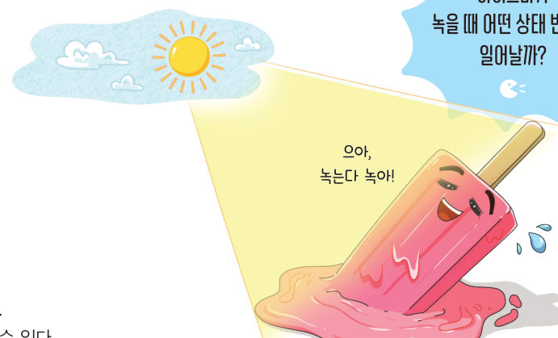
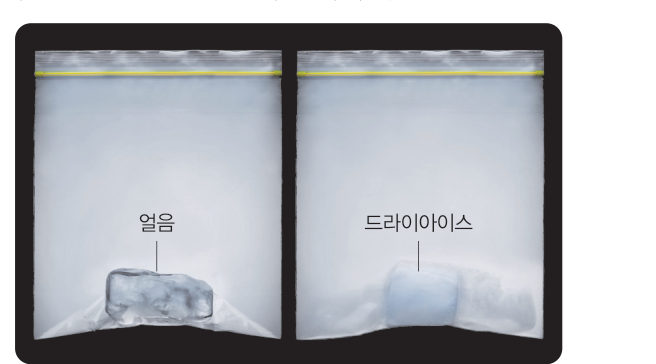
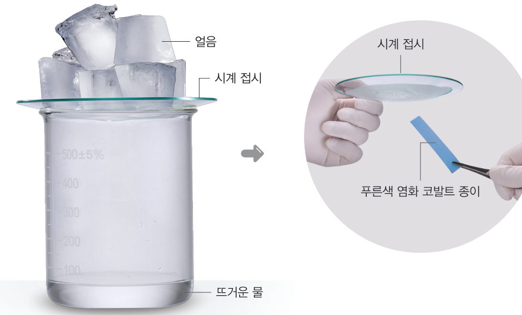
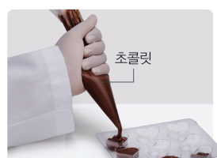
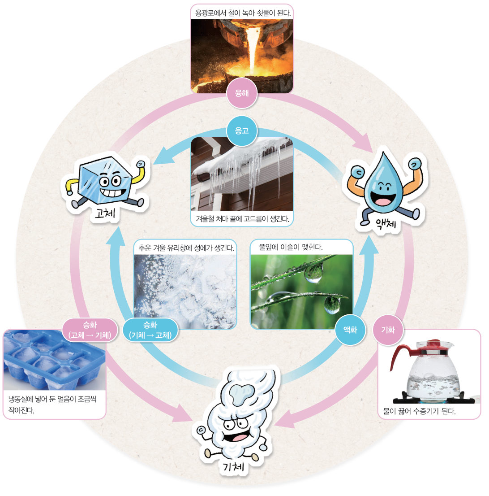

살아있는 교과서 · Ⅳ. 물질의 상태 변화 · 2. 물질의 상태와 상태 변화 · 02 126~129쪽
물질의
물질의
상태 변화
“으아, 녹는다 녹아!” 아이스바를 먹다 보면 고체였던 아이스바가 액체가 되어 녹아 흐른다. 이처럼 물질이 한 가지 상태에서 다른 상태로 변하는 것을 상태 변화라고 한다. 가상 실험으로 여러 가지 물질의 상태 변화를 관찰해 보자.
🎯 이 단원을 배우면 — 여러 가지 물질의 상태 변화를 관찰하고 구분할 수 있으며, 물질의 상태가 변해도 물질의 성질은 변하지 않음을 알 수 있다.
탐구 1얼음과 드라이아이스의 상태 변화 관찰하기 126쪽
물질의 상태 변화에는 어떤 것이 있을까?

- 두 개의 비닐 주머니에 핀셋으로 얼음 조각과 드라이아이스 조각을 각각 넣는다. (드라이아이스를 넣은 주머니가 너무 부풀지 않도록 작은 조각을 넣는다.)
- 비닐 주머니에서 공기를 최대한 빼고 입구를 막는다.
- 관찰 비닐 주머니 안의 얼음과 드라이아이스 조각이 각각 어떻게 변하는지 관찰한다.
⚠️ 드라이아이스를 다룰 때는 반드시 면장갑을 낀다. 실험하는 동안 창문을 열어 환기가 되도록 한다.
가상 실험두 비닐 주머니 관찰하기
시간 막대를 움직이거나 [재생]을 눌러 두 주머니 속 물질이 어떻게 변하는지 관찰하자. 아래 입자 확대 창에서 입자의 모습도 비교해 보자.
1얼음은 변하고, 드라이아이스는 변한다. 그래서 을 넣은 주머니가 부풀어 오른다.
탐구 2물의 상태 변화 관찰하기 127쪽

- 뜨거운 물이 들어 있는 비커 위에 얼음이 담긴 시계 접시를 올려놓는다.
- 관찰 비커 안쪽과 시계 접시 아랫면의 변화를 관찰한다.
- 관찰 시계 접시의 아랫면에 맺힌 액체에 푸른색 염화 코발트 종이를 대어 보고 색 변화를 관찰한다.
⚠️ 뜨거운 물을 사용할 때 화상을 입지 않도록 주의한다. 유리 기구를 다룰 때 깨지지 않게 조심한다.
가상 실험비커와 시계 접시
[시계 접시 올리기]를 누르고 잠시 기다린 뒤, [염화 코발트 종이 대기]를 눌러 보자. 확대 창에서 물 입자(파란 점)가 어디서 어디로 가는지 따라가 보자.
1푸른색 염화 코발트 종이는 으로 변하므로, 시계 접시의 아랫면에 맺힌 액체는 이다.
정리해 볼까탐구 결과 정리 127쪽
1탐구 1과 탐구 2에서 물질의 상태는 각각 어떻게 변하는가?
• 얼음: 고체 → • 드라이아이스: 고체 →
• 물: 액체 → →
• 얼음: 고체 → • 드라이아이스: 고체 →
• 물: 액체 → →
2결론 도출 탐구 2의 결과를 바탕으로, 물질의 상태가 변할 때 물질의 성질은 어떻게 되는지 이야기해 보자.
다르게 해 보기 · 초콜릿의 상태 변화 관찰하기

① 초콜릿을 잘게 부숴 맛을 본 다음, 비닐 주머니에 넣는다. ② 비닐 주머니를 뜨거운 물에 담가 초콜릿을 완전히 녹인 뒤 나무젓가락으로 찍어 맛을 본다. ③ 비닐 주머니의 한쪽 끝을 조금 잘라 초콜릿을 틀에 붓고 서서히 굳힌다.
정리 녹이기 전과 녹인 뒤 초콜릿의 맛은 .
교과서융해 · 응고 · 기화 · 액화 · 승화 128~129쪽
고체인 얼음이 녹으면 액체인 물로 변한다. 이처럼 물질의 상태가 고체에서 액체로 변하는 것을 융해라고 하고, 반대로 액체에서 고체로 변하는 것을 응고라고 한다. 한편 고체 이산화 탄소인 드라이아이스는 액체를 거치지 않고 기체로 변한다. 이처럼 물질의 상태가 고체에서 곧바로 기체로 변하는 것을 승화라고 한다. 이와 반대로 기체가 곧바로 고체로 변하는 것도 승화라고 한다.
탐구에서 비커 속 물은 기체인 수증기로 변했다가, 시계 접시의 아랫면에서 다시 액체인 물로 변한다. 이처럼 물질의 상태가 액체에서 기체로 변하는 것을 기화, 기체에서 액체로 변하는 것을 액화라고 한다.
푸른색 염화 코발트 종이를 시계 접시의 아랫면에 맺힌 액체에 갖다 대면 붉은색으로 변해 물이라는 것을 확인할 수 있다. 이와 같이 물질의 상태가 변해도 물질의 성질은 변하지 않는다.

움직이는 그림 4-6상태 변화 탐색기
화살표 버튼을 눌러 보자. 입자 상자에서 상태가 바뀌는 모습과 그 상태 변화의 이름, 생활 속 예가 나타나요.
화살표 버튼을 눌러 보세요.
해 보기물질의 상태 변화 구분하기 128쪽
모둠별로 상태 변화의 예를 조사하여 공유하고, 각각 어떤 상태 변화인지 구분해 보자. 먼저 아래 예부터 구분해 볼까?
| 상태 변화의 예 | 상태 변화 |
|---|---|
| ① 아이스바가 녹아 흐른다. | |
| ② 겨울철 처마 끝에 고드름이 생긴다. | |
| ③ 젖은 빨래가 마른다. | |
| ④ 차가운 음료수 컵 바깥에 물방울이 맺힌다. | |
| ⑤ 옷장 속 나프탈렌이 점점 작아진다. | |
| ⑥ 추운 아침 풀잎에 서리가 내린다. | |
| ⑦ 녹인 초콜릿을 틀에 부어 굳힌다. | |
| ⑧ 겨울에 따뜻한 실내로 들어오면 안경에 김이 서린다. |
2🧑🤝🧑 우리 모둠이 조사한 상태 변화의 예 3가지와 그 종류를 쓰고, 활동하면서 새롭게 알게 된 예를 이야기해 보자.
스스로 확인하기126쪽 학습 목표를 달성했는지 확인해 보자 129쪽
1개념 확인 물질의 상태가 고체에서 액체로 변하는 것을 ( )(이)라고 하고, 고체에서 곧바로 기체로 변하는 것을 ( )(이)라고 한다.
2사고력 추운 겨울날 그늘진 곳에 만들어 두었던 눈사람의 크기가 작아진 까닭을 물질의 상태 변화로 설명해 보자.
🧩 두 번째 블록 · 힌트 조각 2 (129쪽)
젖은 흙이 마를 때 액체인 물은 ( )인 수증기가 된다.
5분 테스트물질의 상태 변화
1물질이 다른 상태로 변하는 것을 라고 한다. 비커 속 물이 수증기로 변하는 현상은 이고, 수증기가 시계 접시의 아랫면에서 다시 물로 변하는 현상은 이다.
2물질의 상태가 변해도 물질의 은 변하지 않는다. 융해는 , 응고는 로 변하는 것이다.
3㉠ 겨울철 처마 끝에 고드름이 생긴다. ㉡ 냉동실에 넣어 둔 얼음이 조금씩 작아진다. ㉢ 용광로에서 철이 녹아 쇳물이 된다.
융해 → 응고 → 승화 →
추운 겨울 유리창에 성에가 생기는 현상은 로 변하는 승화의 예이다.
융해 → 응고 → 승화 →
추운 겨울 유리창에 성에가 생기는 현상은 로 변하는 승화의 예이다.
스스로 정리하기물질의 상태 변화 134쪽
2물질의 상태 변화
(1) 상태 변화: 물질이 한 가지 상태에서 다른 상태로 변하는 것
(2) 물질의 상태 변화에는 융해, 응고, 기화, 액화, 이/가 있다.
(2) 물질의 상태 변화에는 융해, 응고, 기화, 액화, 이/가 있다.
제출학생 정보 · 제출하기
모든 활동을 마친 뒤 제출하면 전체가 한 번에 채점되고 피드백이 나타나요. 답안은 선생님 스프레드시트(중1 탭)에 기록돼요.